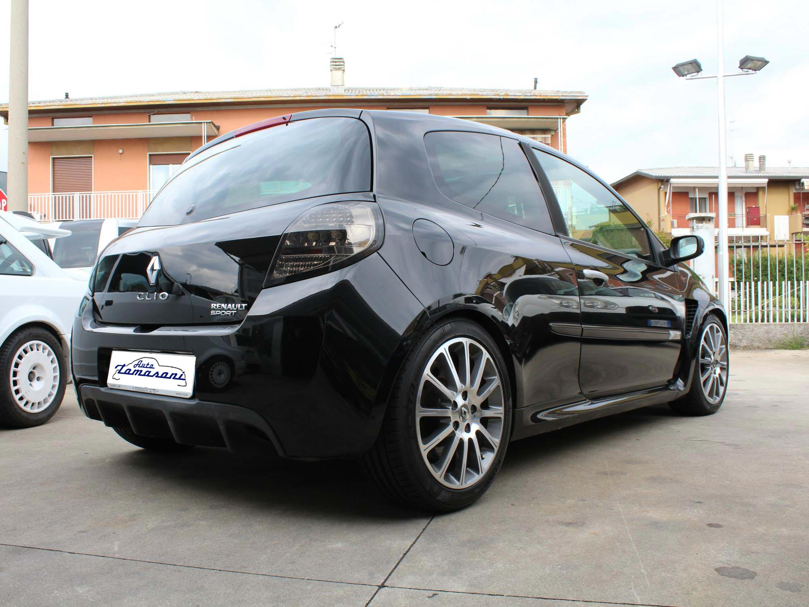
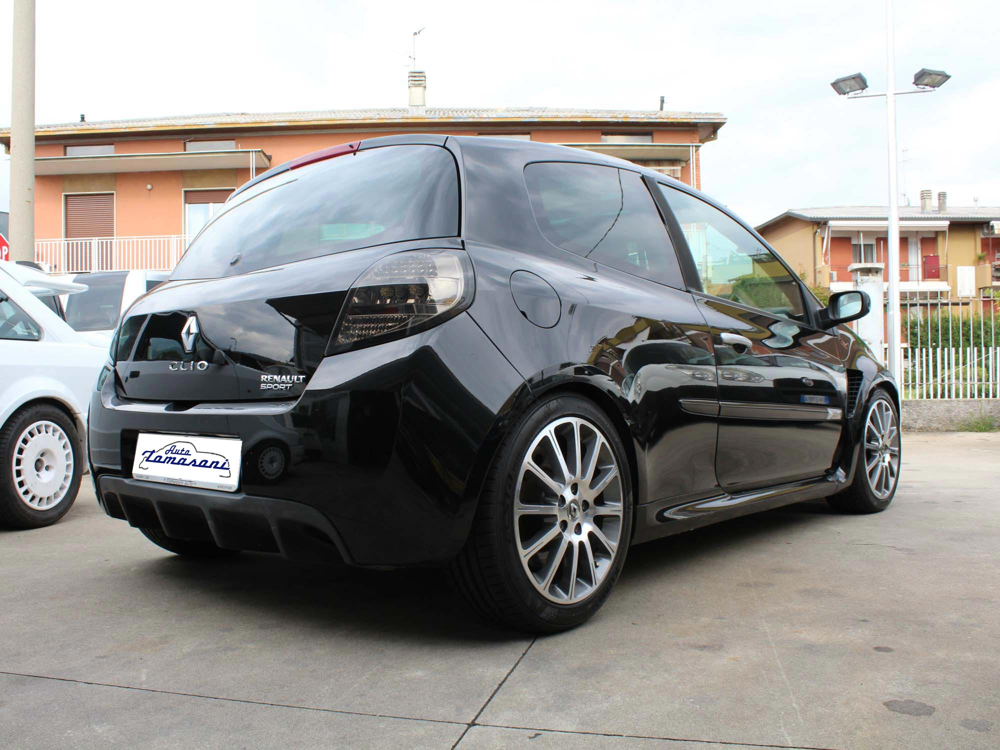
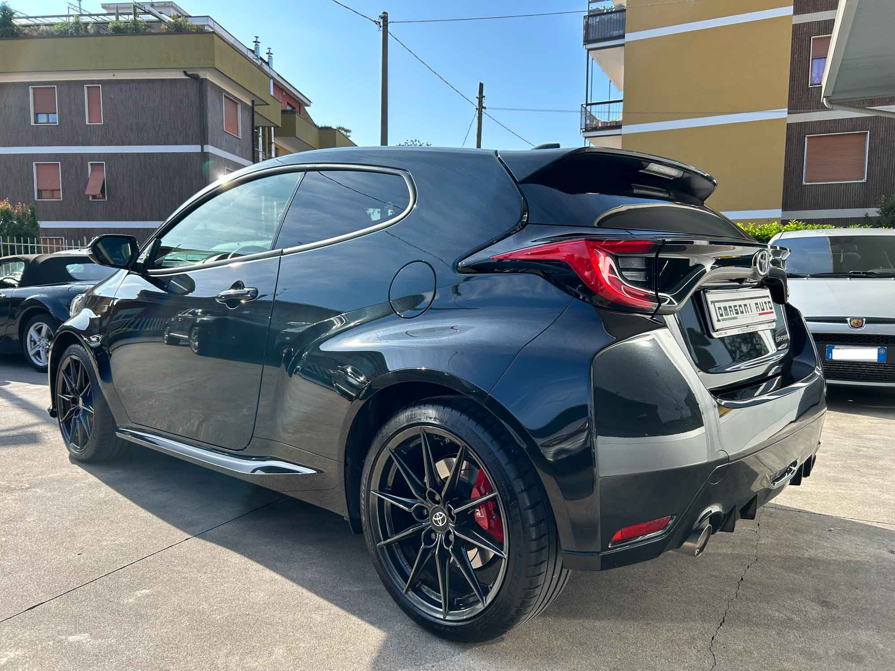
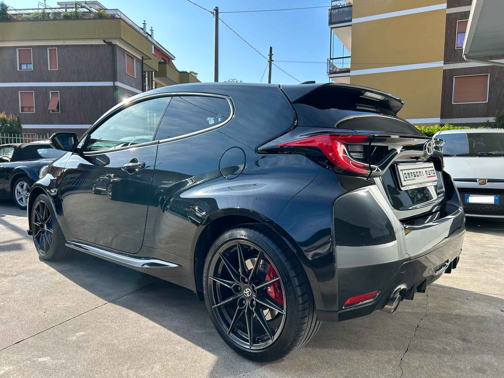
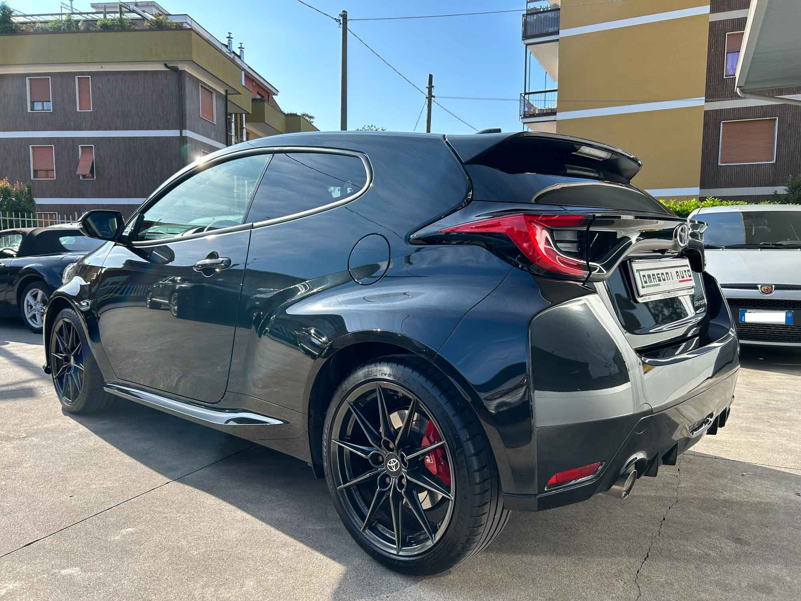
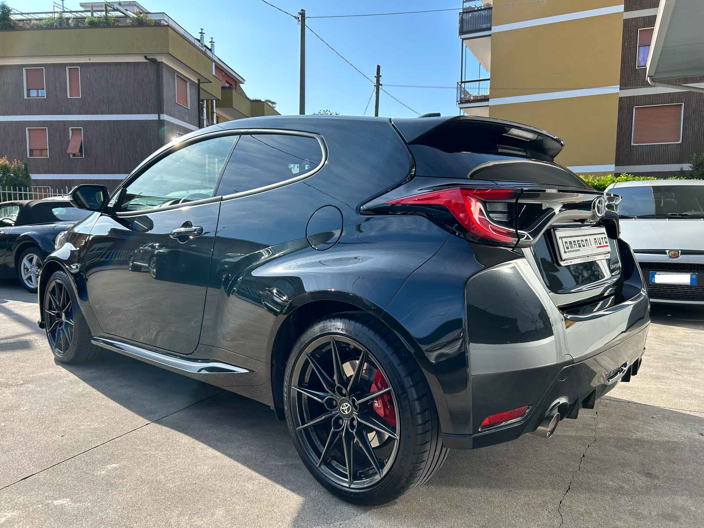

La Tomasoni s.n.c. è un'azienda familiare che opera nel settore automobilistico dal 1958. Fondata da Oreste Tomasoni e oggi gestita dai figli Roberto e Paolo, la nostra attività è cresciuta nel tempo, passando dalla riparazione di autoveicoli alla vendita. Con oltre 60 anni di esperienza, combiniamo tradizione artigianale e innovazione, grazie a continui aggiornamenti attraverso corsi tecnici e commerciali. Oggi, con l'ingresso della terza generazione, stiamo introducendo nuove tecnologie informatiche per migliorare ulteriormente i nostri servizi, rendendoli ancora più efficienti e al passo con i tempi.
La nostra officina è dotata di attrezzature elettroniche all'avanguardia per diagnosticare e risolvere qualsiasi problema. Offriamo servizi completi, tra cui pre-collaudi, manutenzione pneumatici e, se necessario, forniamo un'auto sostitutiva durante le riparazioni. Inoltre, offriamo consulenza personalizzata sull'acquisto di autovetture, aiutando i clienti a trovare la soluzione più adatta alle loro esigenze. Per gli appassionati di auto d'epoca, ci occupiamo anche della gestione delle pratiche ASI, necessarie per certificare il valore storico del veicolo.
Alla base del nostro lavoro c'è una forte passione per le automobili, che ci impegna non solo professionalmente, ma anche nel tempo libero. Questa passione ci motiva a offrire un servizio impeccabile, sempre attento alle esigenze dei nostri clienti, con serietà e competenza.
 


 

Email:
info@autotomasoni.com
PEC:
tomasonisnc@pec.buffetti.it
Telefono: 035 5113389 |
Cellullare: +39 320 6657485
Indirizzo: Via LOMBARDIA 8 - 24022 -
ALZANO LOMBARDO (BG)
Seguici sul nostro
profilo AutoScout24!


 
